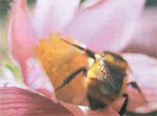

Before you take that next forkful of food, be thankful. Or rather, bee thankful. Every third bite of food we eat, as well as most of our clothing, some beverages and many medicines, could not be produced without the essential pollination provided by bees, according to research entomologist Stephen Buchmann.
But native bees and other pollinators are in crisis. Their populations are plummeting due to habitat destruction and fragmentation, and due to the widespread use of pesticides on farms and lawns.
The U.S. Fish and Wildlife Service reports that more than 50 pollinator species are threatened or endangered; wild honeybee populations have nose-dived, declining by 25 percent since 1990. Not only does this spell peril for pollinators and plants, but it also negatively affects the human food supply. Pollinators are critical in the production of more than 150 food crops in the United States - from apples to alfalfa. Honeybee shortages in California caused by parasites and pesticides required almond growers to import bees to pollinate their crop. Worth $800 million, that's nothing to sneeze at.
It's no exaggeration when researchers point out that our food - and our future - relies on pollinators. The good news is that you can take steps to encourage pollinator populations in your own back yard. The steps are simple, and the rewards are fruitful. While you're helping them, they'll be helping your fruit and vegetable crops be the best they can bee. For example, studies have shown that ample bee pollination can increase strawberry fruit size by 40 percent. To attract more pollinators:
Provide nesting blocks for pollen bees. Habitat for these bees can be as simple as 5/16-inch holes drilled into an old log or small blocks of wood (visit the U.S. Department of Agriculture's Bee Biology and Systematics Laboratory Web site at www.loganbeelab.usu.edu /) or you can purchase pre-drilled blocks from Fedco ( www.feedcoseeds.com) and other garden product suppliers.
Lose your lawn. Create your own pollinator-friendly garden by planting a variety of native flowering plants. The Lady Bird Johnson Wildflower Center offers lists of native flowering plants and links to local native plant societies [(512) 292-4200 or www.wildflower.org ] .
Use organic pest-control methods, not pesticides. Common-Sense Pest Control by William Olkowski is a veritable treasure trove of information on least-toxic techniques.
Make habitat for pollinators and other wild critters. The U.S. Department of Agriculture's Conservation Program [(888) LANDCARE or www.nrcs.usda.gov/feature/backyard/wildhab.html ] gives valuable tips on establishing beneficial back yards. Also see The National Wildlife Federation's Habitat Program Web site [ www.nwf.org/backyardwildlifehabitat ] , where you can keep track of your own back yard's development and learn about species native to your area. Last but not least, support growers who use pollinator-friendly practices and buy organic food as often as you can.
Busy, Busy Bees. To make just one pound of honey, worker honeybees travel 55,000 miles and source 2 million flowers.
|
 |
|
|